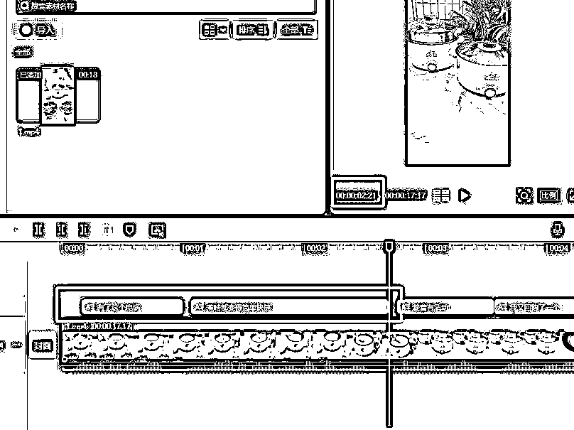

来源：https://si7o8nqh3o3.feishu.cn/docx/KDSfdybt7od4PxxGNnDcMXqfnfb
做电商、做带货，特别是做快手直播，每天都需要更新大量的产品视频，动不动就要更新50个视频起步，光每天剪辑的工作就需要占据半天的时间，最重要的是这种工作还很磨人心态，能坚持下来一个星期，也很难再坚持第二个星期，于是就想有没有高效的解决办法，到处找市面上的剪辑软件挨个测试！终于让我解决了这个问题，想到应该有很多圈友跟我有一样的需求，下面我把整个流程给分享出来。
假设我需要在快手上卖电煮锅，需要先拆解近期同类产品的爆款视频，在抖音搜索“电煮锅”，找到一个高赞、高评论的视频，接下来主要是对爆款视频的脚本镜头进行拆解，我们先来看段视频。
从上面的视频中，我们可以初步拆解出来的脚本镜头，这些还只是初步拆出来的脚本，后面还需要调整。
接下来，我们按照上面的拆分场景，进行对应文件夹的创建，为了方便后面填充素材使用。
我们先到抖音或者快手去搜“电煮锅”，会出来一大堆这类素材，这里我以这家“电煮锅厂家”的账号为例，尽量找无水印、高清晰度的视频素材，如果你用这种方式找不到同类型的素材，那就用考古加+有米有数的方式来找，这类找的素材大部分都是投流素材，质量和效果方面更佳。
找到素材以后，我们用抖音网页端打开它，需要把它下载下来，这里我是用微软自带的浏览器-Edge、安装一个“强力网页视频下载”工具，安装也很简单，直接在扩展里选“获取扩展”，然后搜索安装即可。
我们打开刚才找到的“电煮锅厂家”，点开你需要下载的视频，点开后在右上角强力网页视频下载栏里，会出现数字，你点开它后，所有名字都是一样的，你需要先预览下，看看哪个才是自己想要的视频，然后再点下载即可，然后用鼠标滚动下滑，会出来更多的视频，挨个点开看看下载，这里我就先下载20个视频，初始素材肯定是越多越好。
首先我们打开批量剪辑软件，然后用“分割提取”功能，把下载的20个视频进行镜头分割，有些素材因为呈现方式不太一样，需要做“精度”调整，先拿一个素材进行分割测试，看输出后的镜头是否符合要求，不符合的话就调整到最适合的精度值，再导入全部素材进行分割。
批量分割后，需要挨个检查视频镜头，并且也需要进行镜头分配，建议用剪映来将前后跳帧的视频进行删除，这里我们需要把剪影部分的快捷键设置成我们需要的，分割设置成Shift+A、删除设置成Shift+D、保存设置成Shift+S、以片段选定区域设置成Shift+Z、取消选定区域设置成Shift+X、可以提高处理效率。
还记得我们第2步骤创建的文件夹吗？接下来我们需要把对应的镜头，放进对应的文件夹里，后面用的到，这里有些不符合要求的镜头，处理方式有两种！第一就是直接删除，第二就是用剪映微调一下，熟练快捷键后基本处理起来很快。
接下来我们用“探店带货系统”这个功能来批量剪辑，这个是最简单的一种，如果你对视频剪辑有更高要求的话，可以尝试用“精细化顺序混剪”功能。
这里是用音乐+视频素材的方式进行混剪，音乐可以多下载点，最好根据产品属性的人群来选择歌曲，另外视频混剪的过程中，歌曲它是随机调用的，也就是说如果有100首音乐，它会根据每次调用的视频素材组成长短，来对歌曲进行长度的裁剪，下面是同一首歌剪出来的两个成品。
那如果要用口播+视频素材该怎么办呢？我们思考一下，我们前面看的案例，它的镜头场景是怎么组成的。
原文文案：家里有个这种电锅，真的太方便了，趁着有活动，我又回购了一个，它这个是不沾内胆，不管是煎和炒都不会粘锅，平时煮个面，给宝宝做个辅食都特别方便，一家人还能吃个小火锅，关键还有带蒸汽的，可以上蒸下煮，一锅出，现在这个价格，真的超划算。
拆解分析：我们之前拆解场景一共得出有8个场景镜头，每个镜头匹配话的话，应该分割成这样。
1-家里有个这种电锅，真的太方便了 [02:21-125]
2-趁着有活动，我又回购了一个 [01:27-125]
3-它这个是不沾内胆，不管是煎和炒都不会粘锅 [03:03-125]
4-平时煮个面 [00:25-125]
5-给宝宝做个辅食都特别方便 [01:16-125]
6-一家人还能吃个小火锅 [01:10-125]
7-关键还有带蒸汽的，可以上蒸下煮，一锅出 [03:14-125]
8-现在这个价格，真的超划算 [01:24-125]
接下来我们用”文心一言“进行内容仿写生成，组合出更多的文案。
命令语句：帮我生成3条同样产品的句子，汉字不要少于12个，超过15个。（这里的汉字个数需要根据原来的句子长短来修改）
1-家里有个这种电锅，真的太方便了。
1-家里添了这个电锅，做饭轻松又方便。
1-有了这个电锅，煮啥都变得简单快捷。
2-趁着有活动，我又回购了一个
2-趁着优惠活动，我又赶紧买了一个。
2-活动期间，果断再入手了一个
3-它这个是不沾内胆，不管是煎和炒都不会粘锅
3-这款电锅内胆是不沾材质，煎炒食物都不会粘锅
3-这款电锅内胆真的不粘锅，煎炒食物都轻松搞定
4-平时煮个面
4-煮面超级快
4-煮面很方便
5-给宝宝做个辅食都特别方便
5-这款电锅做宝宝辅食特方便
5-给宝宝做辅食，省时又省力
6-一家人还能吃个小火锅
6-大家还能在一起吃火锅
6-一起吃火锅温暖又方便
7-关键还有带蒸汽的，可以上蒸下煮，一锅出
7-这锅太实用了，带蒸汽功能，上蒸下煮超方便
7-带蒸汽功能，上蒸下煮，一锅出，省时省力
8-现在这个价格，真的超划算
8-这个价格买它绝对物超所值
8-趁着现在的价格，赶紧入手
以上就是生成的文案，这里解释下为什么每段都要差不多类型的句子，因为前后容易连贯通顺，另外就是长度要相差不大，因为它需要配合素材长度来解决，假如你的文字长短不一，很容易造成素材的显示不连贯或者重复的问题，接下来我们需要把文案放进第2步骤创建的文件夹，后面只需要继续往里面增加文案即可，它们每段都是随机组合的。
我们需要先尝试剪辑一条，检查下素材显示情况和整个视频的通顺度，再来调整对应的参数。
这里最常见的问题就是，某一段话读完后，但是素材画面切了两次，这种的解决办法就是控制素材的长度，比如这段话读出来，就是要显示2个1秒的画面，那么我们就通过剪映的加速很减速来控制画面的长度即可。
首先我们把剪好的一条视频素材导入剪映，把字幕识别出来，然后我们看每段话结束的位置是多少秒，那么你大概就可以判断，你要准备素材调整到多少秒。

比如第一段显示大概是02:21，语速125、那么就知道这个长度的话，所需要的素材大概是2秒左右，那么就需要将第一个镜头的所有素材，都控制在这个范围区间，在上面也有标注全部脚本的长度，这样就能确保所有镜头都能匹配到，后面你在往里面填充素材，就知道哪些素材合适，哪些素材不合适了。
看下生成的成品素材，画面和文案都没有问题，那么接下来就不断地往文件夹里添加素材和文案即可，另外还可以灵活调整文案，比如可以把第5个脚本炒菜换成煲汤，这些顺序都可以更换，主要看自己的文案如何迎合，另外一点很重要的是，我们的文案和镜头一定要抄爆款！爆款是经过市场认可的。
以上就是我的分享，我是千韭，韭菜的韭，一个喜欢捣鼓各种黑科技的男人，这种批量剪辑的模式能够覆盖很多行业，希望对大家有帮助和启发。